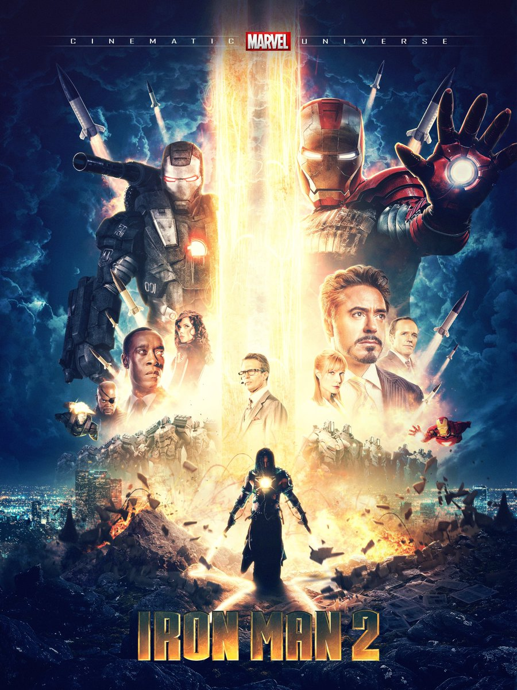
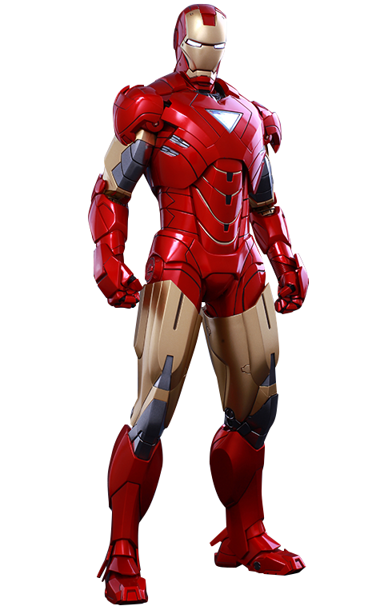

Iron Man 2 2010

Movie Plot:



Full Name: Iron Man 2
IMDb RATING: 7.0/10
Genre: Action, Adventure, Sci-Fi
Release Date: 7 May 2010 (USA)
Duration: 2h 6min
Director: Jon Favreau
Writer: Justin Theroux (screenplay), Stan Lee (Marvel comic book)
Movie Plot:
With the world now aware of his identity as Iron Man, Tony Stark must contend with both his declining health and a vengeful mad man with ties to his father’s legacy. Tony Stark is under pressure from various sources, including the government, to share his technology with the world. He must find a way to fight them while also tackling his other enemies.
Iron Man 2 Cast
Robert Downey Jr.
American actor
age 57 years
Gwyneth Paltrow
American actor
age 49 years
Jon Favreau
American actor
age 55 years
Mickey Rourke
American actor
age 69 years
Don Cheadle
American actor
age 57 years
Scarlett Johansson
American actor
age 37 years